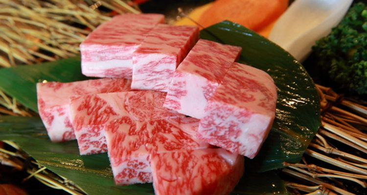

米澤牛
よねざわぎゅう\Yonezawa beef
米澤牛介紹

「米澤牛為山形縣置賜地區米澤市的和牛品牌，置賜地區四周被群山包圍，盆地地形造就了夏季炎熱冬季極寒的極端氣候。在廣闊的大自然中，用小麥與玉米等調配的特製肥料飼育之下，米澤牛的肉質與油花比例堪稱完美，所以才能產出品質優良的牛肉。
米澤牛與松坂牛、神戶牛並列為「日本三大和牛」，相信很多人都聽過。米澤牛有時與近江牛不相上下，不過能擠進日本前3名，米澤牛的頂級肉質絕對是備受肯定的。
關於米澤牛為何能成為三大和牛，並沒有留下很確切的根據，不過可以從米澤牛的傳統歴史看出些端倪。米澤牛起源追朔到明治維新時期，當時以英文教師身分到達日本的英國人Dallas先生對於米澤牛的美味感動不已，於教師任期結束後將整頭米澤牛帶至橫濱，受到大家的歡迎。此後山形縣開始推廣牛肉生產，以品質穩定為目標，山形牛便成了正式的總稱。
米澤牛的不同之處
 除了米澤牛，山形還有另一品種「山形牛」。兩者的不同在於飼育地點，米澤牛僅限於山形縣置賜三市五町的牛舎，而山形牛則是整個山形縣。
除了米澤牛，山形還有另一品種「山形牛」。兩者的不同在於飼育地點，米澤牛僅限於山形縣置賜三市五町的牛舎，而山形牛則是整個山形縣。
且米澤牛僅限「黑毛和種未有生育經驗的母牛」，山形牛為「未生育且去勢的牛隻」並沒有性別之分。另外米澤牛品質需為3級以上等條件，比山形牛有著更嚴苛的規定，米澤牛雖說是山形牛的一種，但數量稀少且肉質等級都是山形牛中的NO.1。
米澤牛推薦料理＆主流吃法
米澤牛推薦料理
米澤牛生長在四季變化劇烈的環境中，優質的味道與適度的油花為主要特色，不管做成什麼料理都非常美味。 能盡情感受牛肉柔滑口感的燒肉或牛排，吸取飽滿醬汁在嘴中散發鮮甜的壽喜燒，入口即化的涮涮鍋，都是米澤牛的推薦吃法。想來點不一樣的話，可以選擇用100％米澤牛製成的漢堡排，將牛肉汁緊緊鎖住，顛覆日式漢堡排的既有印象，令人回味無窮。
米澤牛主流吃法
 大啖米澤牛的同時，來杯當地酒就更讚啦～山形縣有好喝的水帶動日本酒產業興盛，知名品牌「十四代」、「出羽櫻」都來自這裡，知名葡萄酒釀酒廠「朝日町WINERY（朝日町ワイナリー）」、「高畠WINERY（高畠ワイナリー）」等也頗富盛名，用山形的當地酒搭配米澤牛，簡直是雙重頂級享受。
尤其推薦日本料理×日本酒、洋食×葡萄酒的組合，例如壽喜燒或涮涮鍋配日本酒，牛排或漢堡排配葡萄酒，相互融合展現各自的優點。品嘗山形縣產的日本酒與葡萄酒，米澤牛肯定是搭配料理的第一首選。
大啖米澤牛的同時，來杯當地酒就更讚啦～山形縣有好喝的水帶動日本酒產業興盛，知名品牌「十四代」、「出羽櫻」都來自這裡，知名葡萄酒釀酒廠「朝日町WINERY（朝日町ワイナリー）」、「高畠WINERY（高畠ワイナリー）」等也頗富盛名，用山形的當地酒搭配米澤牛，簡直是雙重頂級享受。
尤其推薦日本料理×日本酒、洋食×葡萄酒的組合，例如壽喜燒或涮涮鍋配日本酒，牛排或漢堡排配葡萄酒，相互融合展現各自的優點。品嘗山形縣產的日本酒與葡萄酒，米澤牛肯定是搭配料理的第一首選。
總結
 若想品嘗由專業人士鑑定過的和牛，那就挑一家有販售米澤牛的餐廳吧。山形縣米澤市置賜地區裡有許多提供當地產米澤牛的餐飲店，同樣引進了指定店制度，品質有保證讓人安心品味。除了山形縣以外，在東京都等其他地方的餐廳也都能見到山形縣的牛肉。
提供各種米澤牛料理的餐飲店，或是專賣鐵板燒或燒肉的店家，使用100％米澤牛肉做成的漢堡排、米澤牛肉壽司店等，喜歡追求鮮度的人，跑一趟當地鮮肉店自營的餐廳吧。
若想品嘗由專業人士鑑定過的和牛，那就挑一家有販售米澤牛的餐廳吧。山形縣米澤市置賜地區裡有許多提供當地產米澤牛的餐飲店，同樣引進了指定店制度，品質有保證讓人安心品味。除了山形縣以外，在東京都等其他地方的餐廳也都能見到山形縣的牛肉。
提供各種米澤牛料理的餐飲店，或是專賣鐵板燒或燒肉的店家，使用100％米澤牛肉做成的漢堡排、米澤牛肉壽司店等，喜歡追求鮮度的人，跑一趟當地鮮肉店自營的餐廳吧。